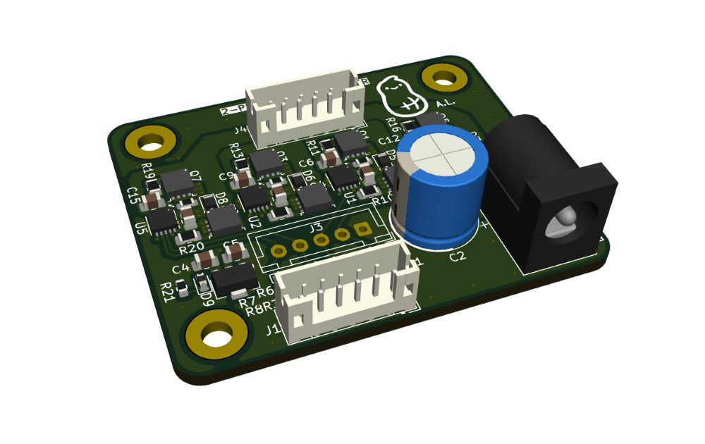
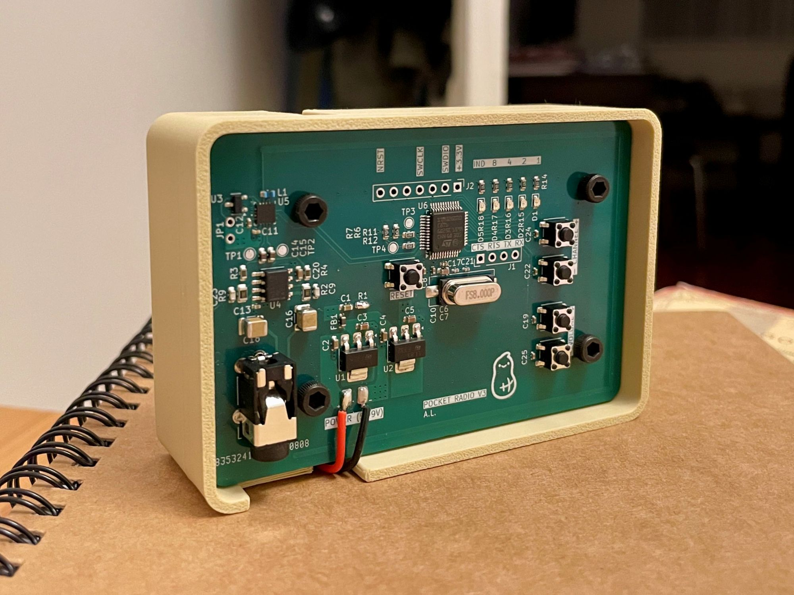
This is my custom FM radio receiver PCB for listening to classical music on Saturday mornings, and winter holiday tunes.
Features:
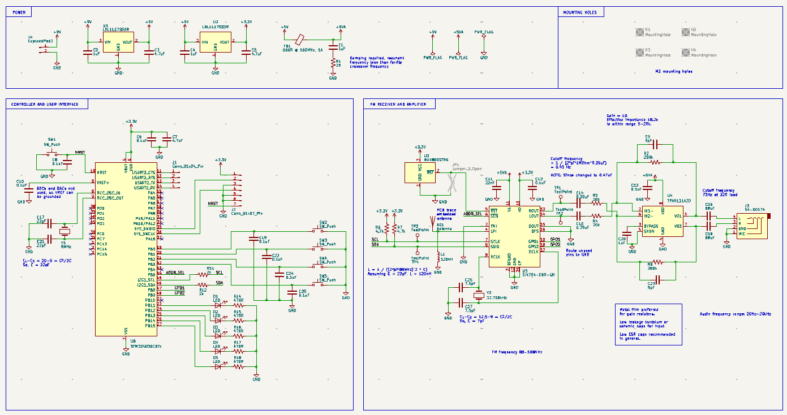
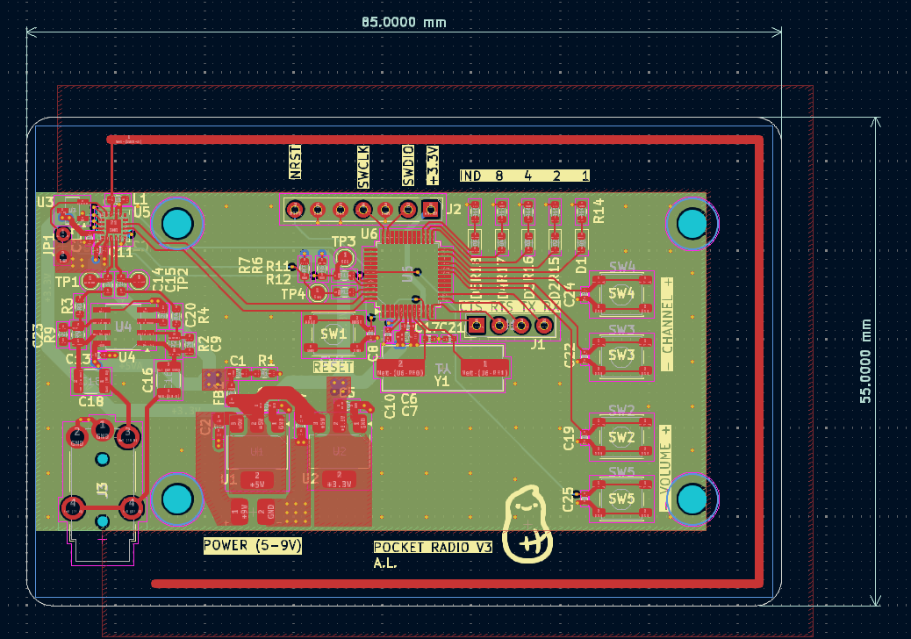
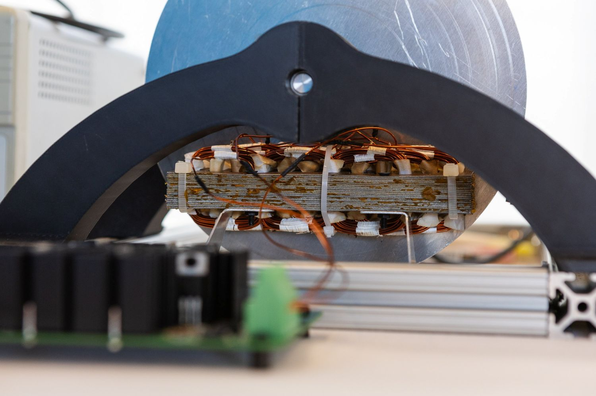
Part 1 of 2 of my capstone project, which is to build a miniature maglev train. The first part involved building a custom linear induction motor from scratch, which propels the train.
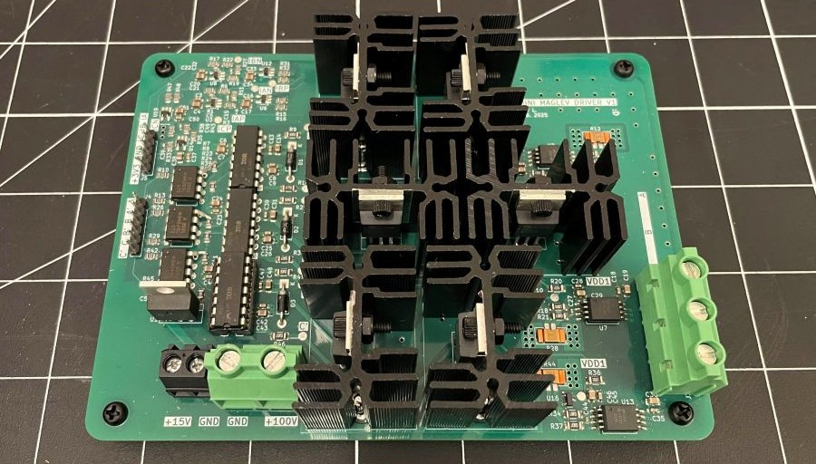
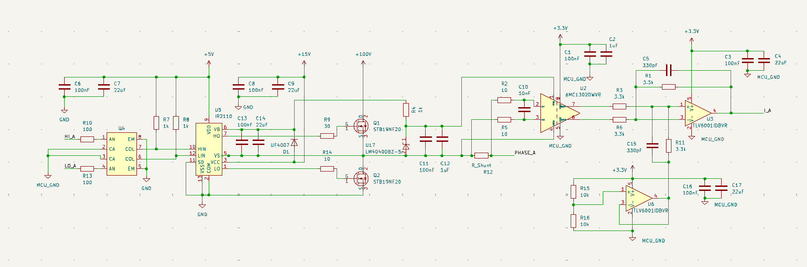
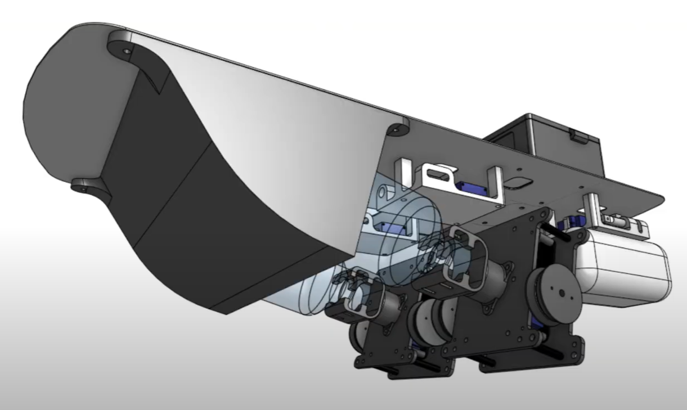
The autonomous actuated parachute system is one of the projects that I led on the Uncrewed Aircraft Systems student design team.
As a lead, I did a fair bit of project management, but still dove into some technical work:
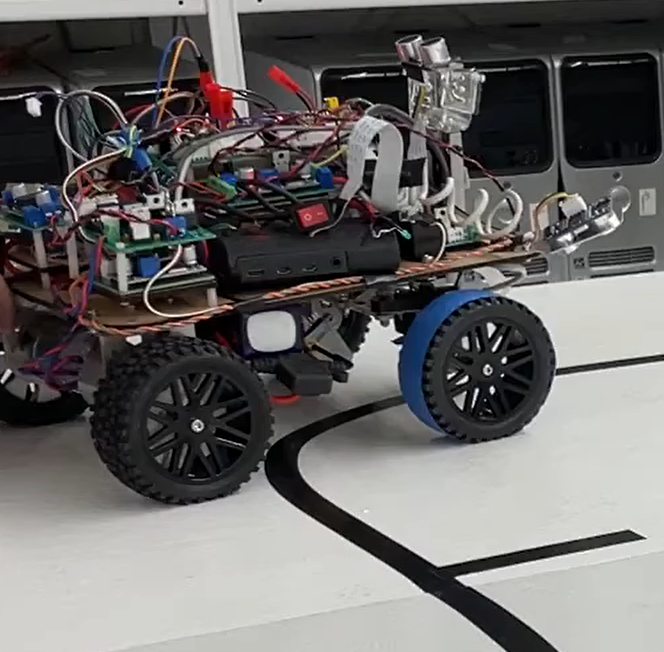
My very first (and very ugly) PCB was an H-bridge for an autonomous Mario Kart racing robot. I completed the design very early on in the term after watching a couple youtube videos. The driver worked well enough, but I won't make any guarantees about signal integrity or EMI!
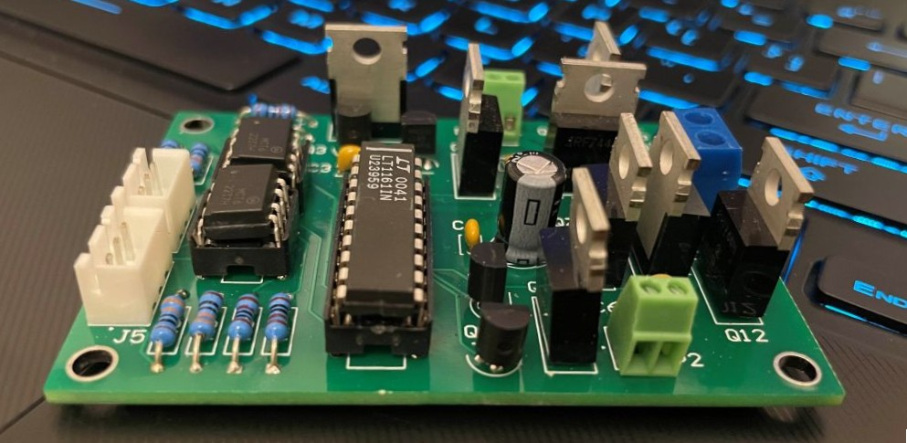
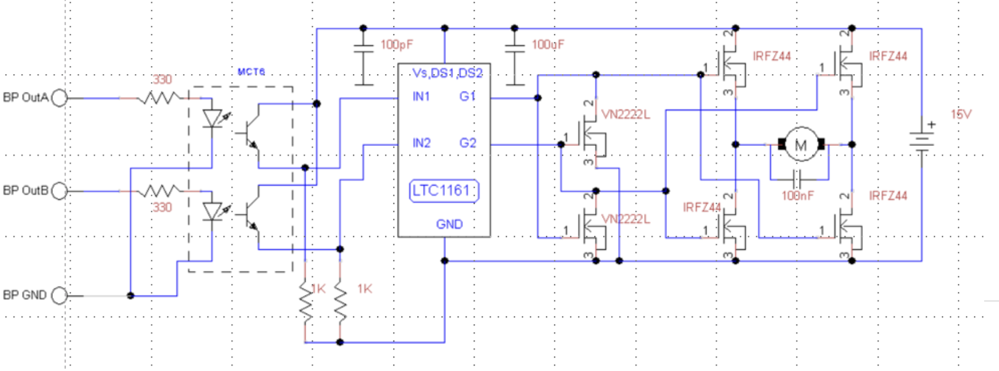
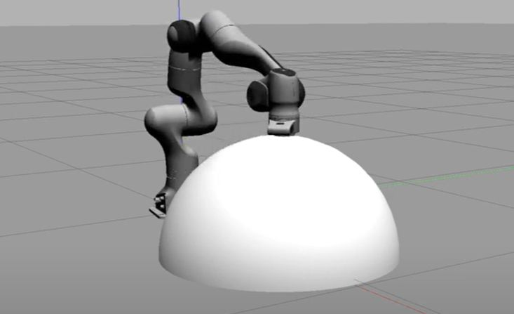
A video showcasing robot behavior with differently tuned impedance controllers:
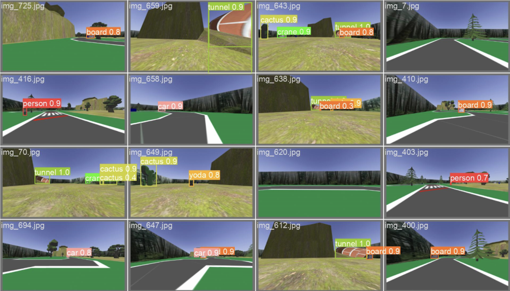
The competition goal for this project was drive a robot in Gazebo simulation with ROS to read clue boards and avoid obstacles.
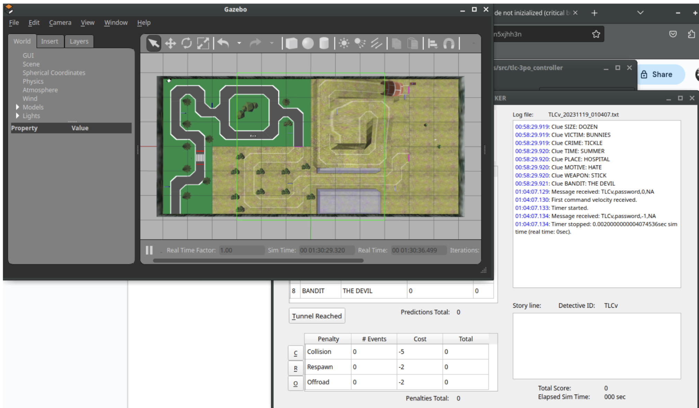